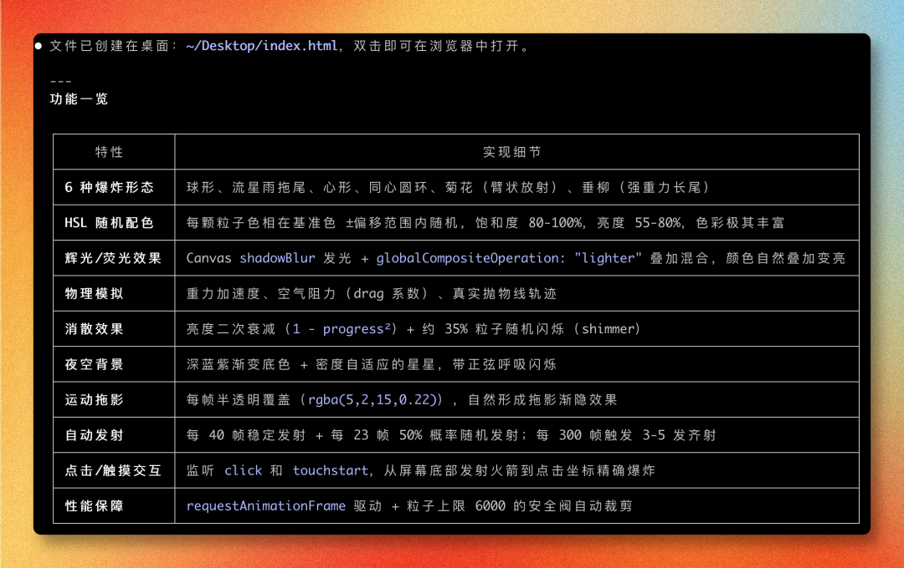

大家好，我是 Ai 学习的老章
6 月 9 日 Anthropic 放出了他们家最强模型 Claude Fable 5
我实测了，确实强：Claude Opus 蒸馏 Qwen 9B 编程模型，消费级显卡本地部署，实测
但是随后就被全球封杀了：Anthropic 天天喊狼来了，结果被严厉的父亲当头一棒
不过开放那几天，有人扒出了它底层的系统提示词还开源了，更妙的是——拿这套提示词配合 Opus 4.8 跑，居然能复现 Fable 5 大约 90% 的效果
本文一起看下 Fable 5 到底强在哪，再深度解析 Anthropic 官方的 Prompt 工程指南，最后把泄露的系统提示词与其他模型低成本复现 Fable 5，以及一个本地可跑的 12B Coder 蒸馏模型与 Fable 5 结合后的奇效
Fable 5 有多强
Anthropic 官方定位很明确：Claude Fable 5 是面向最高难度推理和长周期 Agent 工作的最强模型：
claude-fable-5 | |
相比前代 Opus 4.8，Fable 5 在这些方面有明显提升：
长周期自主性：能持续数天的目标驱动任务，跨长对话保持指令记忆 复杂问题一次命中率：早期测试者反馈，以前需要反复迭代好几天的系统实现，现在一次 pass 就搞定 视觉能力：解读密集技术图片、Web 应用截图的准确率大幅提升，还会自动用 bash 和裁剪工具处理模糊/翻转图片 企业级工作流：财务分析、电子表格、PPT、文档等专业输出质量更高 代码审查与调试：Bug 查找召回率明显高于 Opus 4.8，能跨代码库和 Git 历史搜索 模糊性导航：面对复杂、多线程请求时能自行判断下一步 多 Agent 协调：调度和管理并行 subagent 的能力显著增强
一句话总结：这货不是来做简单任务的，是来接管那些「以前需要人类花几小时、几天、甚至几周才能完成」的复杂工作的
官方 Prompt 工程指南深度解析
Anthropic 同时发布了一份专门针对 Fable 5 的 Prompting 指南，里面有大量实战干货，我把核心要点拆解出来：
一、Effort 参数是第一控制杆
Fable 5 引入了一个新概念——effort 参数，它是智能度、延迟和成本之间的主要权衡控制器
max | ||
xhigh | ||
high | ||
medium | ||
low |
Fable 5 在 low effort 下的表现，往往超过前代模型 xhigh 的表现，用更低成本获得更好效果
二、超强的指令遵循能力
Fable 5 的指令遵循已经强到不需要逐条列举行为规范了，一条简短指令就能搞定。官方给了个简洁性指令的范例：
先说结果
你完成后的第一句话应该回答「发生了什么」或「你发现了什么」
也就是用户说「直接给我结论」时会问的东西，支撑细节和推理放后面
可读性和简洁性是两回事，可读性更重要
三、长时间运行时的进度审计
在长时间自主运行时，Fable 5 可能会编造进度报告，官方建议加这段提示：
在汇报进度之前，用本次会话中的工具返回结果逐条审计你的每个声明。
只汇报你能拿出证据的工作；如果某项内容尚未验证，请明确说明。
Anthropic 测试表明，这段话几乎消除了虚假状态报告，即使在专门设计来诱导它编造的任务上
四、Memory 系统是杀手锏
官方明确建议为 Fable 5 构建记忆系统，一个简单的 Markdown 文件就行：
每个经验存一个文件，顶部写一行摘要。纠错和验证过的正确做法都要记录，包括它们为什么重要。不要保存代码库或聊天记录里已经有的内容；更新已有笔记而不是新建一份；发现错误的笔记直接删掉。
这就是 Claude Code 里 CLAUDE.md 的设计思想来源
五、Adaptive Thinking 永远开启
Fable 5 的思考模式是永远开启的——不能关闭 thinking，只能通过 effort 参数调节思考深度，而且它的原始思维链永远不会返回给用户，只能看到摘要版
六、Scaffolding 变更建议
官方给的迁移建议非常关键：
从你最难的任务开始：让 Fable 5 自己规划、提问、执行 让自验证显式化：独立的验证 subagent 比自我批评表现更好 重构现有 prompt 和 skill：为前代模型写的 skill 对 Fable 5 来说太过规范化了，反而会降低输出质量 不要让 Claude 复述推理过程：会触发 reasoning_extraction拒绝
泄露提示词 vs 官方博客：深度对比
有人从 Fable 5 产品端扒出了完整的系统提示词（约 1600 行），开源在 GitHub 上

对比官方博客，有几个非常有意思的发现：

1. 版权保护极其严格
泄露提示词里有一整个 CRITICAL_COPYRIGHT_COMPLIANCE 区块，规则之严令人咋舌：
单个来源引用不得超过 15 个单词（硬限制） 每个来源最多引用 1 次，之后该来源「关闭」 绝对禁止复制歌词、诗歌、俳句 禁止重建文章的结构或组织方式
这解释了为什么 Fable 5 在做内容摘要时表现得特别「自律」
2. 产品生态全貌
从提示词里可以看到 Claude 的完整产品线：
Claude Code（命令行 Agent 编码工具） Claude Cowork（非开发者的知识工作桌面应用） Claude in Chrome（浏览 Agent） Claude in Excel（电子表格 Agent） Claude in Powerpoint（幻灯片 Agent）
Cowork 可以调用上面所有工具，而且都能通过手机端远程访问
3. 格式化风格的本质变化
提示词里明确写了：Claude 避免过度使用加粗强调、标题、列表和要点，只用保持清晰所需的最低限度格式化
以及：在撰写报告、文档、技术文档和解释说明时，Claude 使用散文体，不用要点、编号列表或过多粗体
所以 Fable 5 输出「不再那么爱用列表和加粗」不是 bug，是写在系统提示词里的设计
4. Adaptive Thinking
官方说 thinking 永远开启，泄露版进一步确认：
默认 display: "omitted"（thinking 块返回空内容）需要显式设置 display: "summarized"才能看到推理摘要原始思维链永远不返回，充了钱也只有摘要
5. Safety Classifiers
泄露版确认了安全分类器的精确范围：
攻击性网络安全（漏洞利用、恶意软件、攻击工具） 生物和生命科学内容（实验方法、分子机制） 思维链提取尝试
触发了 classifier 会返回 stop_reason: "refusal"，而不是报错
6. 两者共有但泄露版更直白——搜索行为
泄露版对搜索时机的界定非常详细，比官方博客多了大量场景判定逻辑，比如：
任何「现任 XX 是谁」类问题必须搜索 死人不需要搜索（因为状态不会变） 用户提到不认识的实体，必须先搜索再回答
低成本教程：4 步用 Opus 4.8 跑出 Fable 5 效果
有网友测试把泄露的系统提示词直接喂给 Opus 4.8（其他模型也可尝试一下），能跑出 Fable 5 大约 90% 的效果，操作极其简单：
第 1 步：下载 Fable 5 的系统提示词
地址：https://github⋅com/elder-plinius/CL4R1T4S/blob/main/ANTHROPIC/CLAUDE-FABLE-5.md
第 2 步：把下载的 CLAUDE-FABLE-5.md 放到你的 Claude Code 项目文件夹
第 3 步：使用特殊启动命令
claude --dangerously-skip-permissions --system-prompt-file CLAUDE-FABLE-5.md
第 4 步：模型切换到 Opus 4.8 Max
就这 4 步，原理很简单：Fable 5 的大部分行为改进（指令遵循、格式控制、记忆系统、进度审计）其实都编码在系统提示词里，把这套「行为规范」注入 Opus 4.8，它就会尽力按这套规范来运行
当然了，Fable 5 的底层模型能力（更强的推理、更好的视觉、更长的上下文保持）是提示词模拟不了的，所以说是 90%，不是 100%
我拿Qwen3.7-Max接入Claude Code测试了一下烟花实验
不加Fable5提示词效果如下
加上系统提示词之后，确实加上了很多巧思，比如辉光效果、拖影、消散等效果确实有点Fable5的影子

原版Fable5表现
本地平替：Gemma 4 12B Coder 蒸馏模型
如果你连 Opus 4.8 的 API 费用都不想出，这里还有个本地方案

HuggingFace 上有个叫 gemma-4-12B-coder-fable5-composer2.5-v1-GGUF 的模型，作者 yuxinlu1 做了一件挺有意思的事情：
训练数据来源（最有价值的部分）
这是一个双来源蒸馏模型：
主数据集 — Composer 2.5 真实思维链：用 Composer 2.5 解答 Python 算法题，保留那些代码通过了测试的推理过程，所以学到的推理链条都指向「真正能跑通的代码」 辅助数据集 — Fable 5 思维链：把 Composer 2.5 做错的题交给 Fable 5 重做，保留通过测试的结果，用来弥补主模型做不出的难题
食谱总结：真实 CoT 做主力覆盖 + 合成 CoT 补失败案例，全部经过执行验证
硬件要求和量化版本
显存/统一内存 vs 上下文长度（以 Q4_K_M 为例）
Apple Silicon 的统一内存也算，只是比独立显卡慢一些
运行方式
推荐用 llama.cpp：
llama-server \
-m gemma4-coding-Q4_K_M.gguf \
--ctx-size 16384 \
--n-gpu-layers 99 \
--no-mmap \
-fa on \
--cache-type-k q8_0 --cache-type-v q8_0 \
--temp 1.0 --top-p 0.95 --top-k 64 \
--host 0.0.0.0 --port 18080
也支持 LM Studio、Jan、Ollama 等一键工具，导入 GGUF 就行
注意事项
需要较新版本的 llama.cpp（使用 gemma4_unified架构，旧版不支持）专注 Python/算法编码，这个领域推理质量最强 减少了安全拒绝（训练数据没有安全 hedging），生产环境需自加护栏 支持 Thinking 模式，推荐开启 enable_thinking=true
v2 更新情况
作者透露：由于 Fable 5 的 API 访问被收回了，手头只攒了一小批 Fable 5 数据，v2 计划改为以 Composer 2.5 为主力，Fable 5 数据做补充，如果一周内 Fable 5 还不回来，可能会引入 GLM-5.2 做额外老师模型——根据 BridgeMind 的评测，GLM-5.2 在 BS 和推理榜上甚至略微超过了 Fable 5